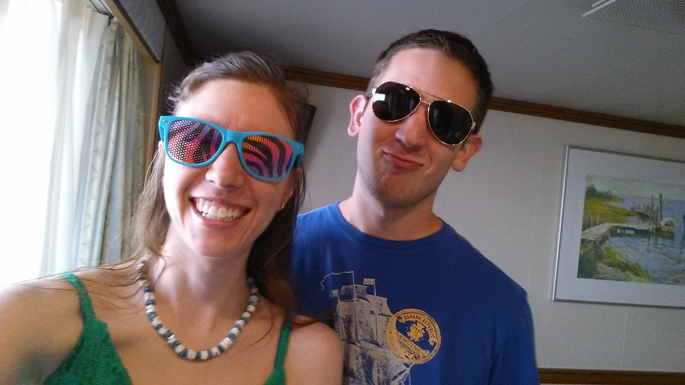
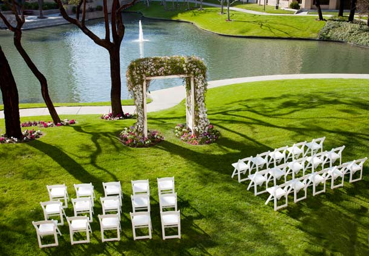
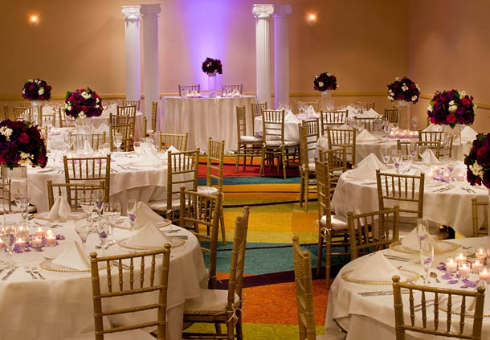

October 24, 2015! RSVP here by October 10!
Click here to book your room at the Costa Mesa Marriott by October 3.
When Nicolle joined Microsoft in March 2010, she sent out an email with interesting tidbits about her. Brian was on an adjacent team and was one of the people that asked a follow-up question about Nicolle's intro email. Nicolle went to his office to say "Hello!" and meet him for the first time, not knowing that he would become the love of her life. From there they were work acquaintances, chatting every now and then. Every week or so, Brian would bring back cookies after taking one of his (many) long lunches and went around the office to share his cookies with coworkers. Nicolle was on the "cookie list" and this was one of her favorite visits (she really liked cookies). They also went to lunch once where Brian was attacked by bees. Aside from this, Nicolle and Brian didn't really hang out--they were on adjacent teams after all.
Nicolle was in a long relationship when she met Brian, but when it ended in October 2010, Brian received a Facebook notification and acted without delay. Brian would've normally waited and gave Nicolle space, but he didn't want to risk the chance that someone would woo her before he had a chance. The very next Friday, Brian asked Nicolle out; they had their first date on October 23, 2010. Nicolle was swept off her feet during their first date and has been ever since. Nicolle and Brian got engaged on July 10, 2014, and have set the wedding date for October 24, 2015, five years and one day from that wonderful first date.
October 24, 2015
Time: 4:30 PM
Attire: Cocktail (semi-formal)
All wedding day events will take place at the Costa Mesa Marriott in beautiful Costa Mesa, California.
The ceremony will be held in the lakeside courtyard behind the Costa Mesa Marriott, starting promptly at 4:30 PM. There will be a few more chairs, but you can get a general idea of the ceremony location from this image:
Cocktail hour will be held outside in the Costa Mesa Marriott's lit-up patio immediately after the ceremony.
After drinks and snacks, we'll all move inside to the ballroom to celebrate with dinner and dancing.
All wedding day events will take place at the Costa Mesa Marriott. The ceremony and cocktail hour will take place in the back; just enter through the main lobby and head towards the back right to get there.
Click here to book your room at the Costa Mesa Marriott by October 3. We have a limited number of rooms available at $109/night as a group rate for Friday and Saturday nights. Additional nights can be booked on the Costa Mesa Marriott website, but will be subject to the availability and the regular rates of the hotel; you can book these on the Marriott website or by calling 714-957-1100.
The Costa Mesa Marriott is located at 500 Anton Boulevard, Costa Mesa, CA 92626.
The best airport to fly in to is John Wayne Airport (SNA); it's only a couple miles from our wedding site! The Costa Mesa Marriott provides a free shuttle to and from the SNA airport, upon request (714-957-1100). If you're feeling adventurous and up for a car ride, you could fly in to Long Beach Airport (LGB), which is 25 miles northwest of the hotel, or Los Angeles International Airport (LAX), which is 45 miles northwest of the hotel.
Find your way to I-405 headed towards Costa Mesa (south-central Orange County) and exit at Bristol St (exit 9B). Head north for a few hundred feet and take a right onto Anton Blvd. Go straight for about 3/10 of a mile and the Costa Mesa Marriott will be on your left. Parking in the garage is free on the day of the wedding.
Costa Mesa and Orange County have plenty of things to keep you entertained while you're visiting. The weather here is always perfect and in Costa Mesa, you're just minutes from shopping, arts, Disneyland, and, of course, the Pacific Ocean. Here is a quick video of Costa Mesa, followed by a few of the things within walking distance of the Costa Mesa Marriott that we recommend checking out if time allows.
South Coast Plaza is the top luxury shopping center in Orange County. Opened in 1967, it has expanded to become the largest mall on the West Coast with around 2.8 million square feet of retail space; that's bigger than Destiny USA, for you upstate New Yorkers, which has a paltry 2.4 million. There are around 285 boutiques and restaurants in the mall, including Cartier, Din Tai Fung, Jimmy Choo, Louis Vuitton, Mikimoto, Prada, Roberto Cavalli, Sanrio, and more!
Starting just a block southwest of the Costa Mesa Marriott, you can take a mile-long walk and see a number of world-renowned pieces of installation art around the South Coast performing arts venues in Costa Mesa. Click on the pushpins on the map below for more details about each installation.
The Segerstrom Center for the Arts is Orange County's largest non-profit arts organization and has several great venues for seeing live theater, dance, and music. The center consists of the 2,994-seat Segerstrom Hall and 269-seat Judy Morr Theater, opened in 1986, along with the 1,954-seat Renée and Henry Segerstrom Concert Hall and 320-seat Samueli Theater, opened in 2006. The Renée and Henry Segerstrom Concert Hall has a concert organ with 4,322 pipes and 75 stops (57 individual voices and 75 ranks). Check their calendar to see what shows you might be able to see close to the wedding date.
Mastro's Steakhouse and Ocean Clubs are a highly-rated collection of steak and seafood restaurants located primarily in Southern California. One of their steakhouses is located in Costa Mesa, just a block west from the Costa Mesa Marriott. After moving to California, we went here for Valentine's day and really enjoyed the steaks. Zagat rates their food a 27 out of 30 (extraordinary) and had this to say: "'Decadent' describes these 'extravagant' steakhouses in LA and Orange County that are 'always busy with celebrities' and feature 'melt-in-your-mouth fantastic' beef accompanied by 'magnificent seafood towers' and a 'don't-miss' butter cake that 'tastes like happiness, rainbows and unicorns.'"
"Transporting you to the heart of Japan," Mitsuwa Marketplace is a Japanese shopping center and grocery store located in Costa Mesa. It's about one mile southwest of the Costa Mesa Marriott, at the intersection of Bristol St. and Paularino Ave. The Costa Mesa marketplace contains a supermarket, restaurants, a bookstore, a confectionery, a cosmetics store, and more (see their floor plan).
We will be posting links to our wedding registries here in the coming weeks.